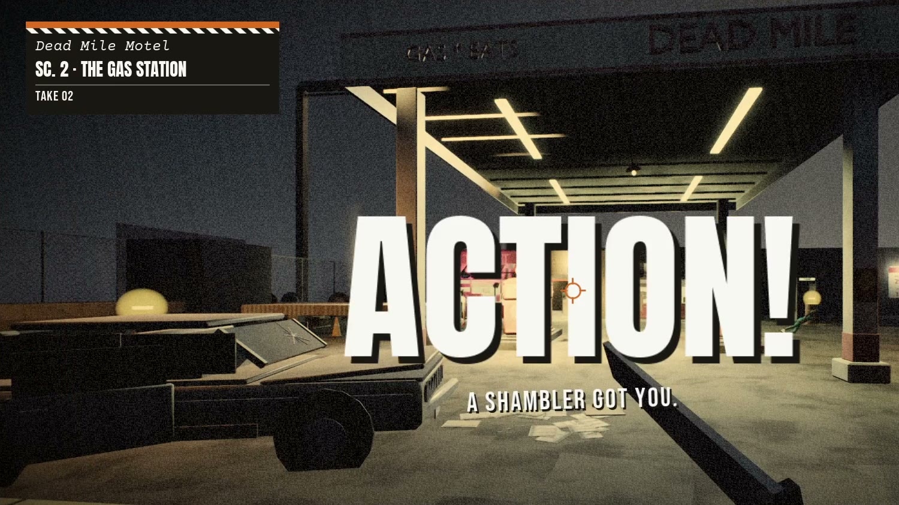

Take two broke three ways in one night
The retake was too easy, then impossible, then haunted by a frozen killer. Three bugs in the same eight hours, each one hidden behind the last, and the 05:30 reel shows a retake that finally starts the scene again properly.
Day 3, Sat 14 NovHour 53
When you die in Reel Time the director calls CUT and the scene starts again as take two. That reset is most of the game: you'll see it more than any other screen. Between Friday evening and Saturday morning it was wrong in three different ways.
One: the dead stayed dead
My note from Friday's playtest was "too easy". The Enemies session found part of the reason at 20:34. Enemies placed in a level were never reset on a retake. The ones I'd killed stayed dead, and the ones still alive stood there with their brains switched off. Its own words: "take 2 cleared in 30 s".
So every death made the level easier. The fix respawns the whole cast on its marks for every take.
Two: everybody at once
With the cast coming back, the third Gameplay session ran its bot through every level at 00:40 and found Zombie 02 in a death loop: more than 20 cuts in a row. Levels wake their enemies area by area as you reach them. A retake was waking every area I'd reached on the last take, so the further I'd got, the more of the cast rushed the start line on the next one.
The Gameplay session fixed it by 01:27 with a test named for the rule: RetakeStartsWithOnlyStartAreasAwake.
Three: the killer who never left
The 01:30 reels went to an independent reviewer, as every reel does. Top of its list at 02:48: after a retake, the enemy that killed you is still standing next to you, frozen, and melee does nothing.
The Enemies session had the cause by 03:01. The respawn only ran if its code had heard take one start, and on some loads take one started before it was listening. So take two had nothing to reset. Enemies spawned mid-scene were never on the list at all. The fix was on main at 04:15: respawn on any take after the first, record mid-scene spawns, and remove any survivor whose brain is off. 55 of 55 tests pass, including a new one, Take2ResetsEvenUnseenTake1AndRuntimeSpawns.

What I take from it
Each bug was invisible until the one in front of it was fixed. "Too easy" hid the stampede, and the stampede hid the frozen killer. None of them was found by reading code. A playtest note found the first, a bot playing every level found the second, and a reviewer watching film found the third.
It isn't finished. The kill in the first clip happens while the camera is turning, so you don't see the swing land. And whether the game is now too hard is the open question for this morning's playtest.